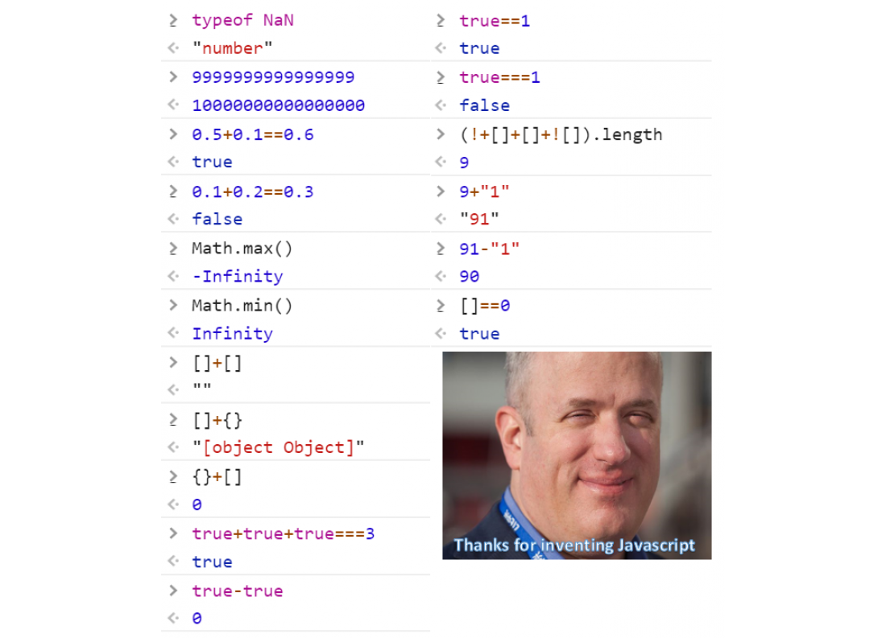
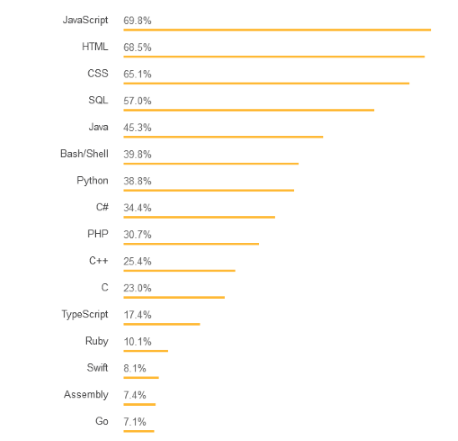

Веб программирование. Фронтенд
JavaScript
Содержание лекции
Начало
Через некоторое время после возникновения и распространения веба, возникла идея придать веб-страницам динамики и интерактивности - дать возможность пользователю как-либо взаимодействовать с документом.
И тогда, в 1995 году, разработанный за 10 дней, появился JavaScript.
У JS была тяжелая история. В то время, никто и не предполагал, насколько разовьётся и станет распространённым веб. Изначально, JS был разработан только для того, чтобы обеспечивать возможность обработки пользовательского взаимодействия (нажатие на кнопочки) и написания простейших алгоритмов.
Трудное детство
Когда произошел взрыв популярности и веб технологии стали распространяться с бешенной скоростью, первоначальный JavaScript был не готов к этому, и его пришлось кардинально менять. За последние 10 лет JavaScript превратился в совершенно другой язык программирования.
Но из соображений обратной совместимости JS не был переделан заново, а дополнен новой функциональностью. В итоге получилось так, что сейчас в языке содержится огромное количество устаревших конструкций, не использующихся элементов, костылей и просто странных вещей.
ECMA Script
Вообще, мы будем изучать браузерный JavaScript. Тот JS, средой выполнения которого является браузер.
Но, в принципе, JavaScript может быть и другим. Например, NodeJS - самая распространённая серверная версия JS.
Сам по себе, JavaScript - это просто язык, т.е. установленный набор команд (синтаксис). А где он будет выполняться, это уже другой вопрос, - зависит от реализации.
Синтаксис языка JavaScript задаётся спецификацией ECMA Script.
Just javascript
Многообразие браузеров
Каждый браузерный движок отображает HTML и CSS по своему.
И каждый движок JavaScript выполняет JS по своему.
Конечно, все браузерные движки должны соответствовать спецификациям HTML5, CSS3, и многим другим общепринятым соглашениям.
В случае с JS, его движки должны соответствовать спецификации ECMA Script.
Многообразие проблем
Но на практике, это не всегда бывает так, как должно.
В одном движке спецификация может не соблюдаться, в другом движке быть какой-нибудь баг.
Помимо спецификации, в каждом движке содержится свой собственный уникальный набор функциональности и API, расширяющий возможности спецификаций.
Так, какое-то действие в одном браузере может совершаться по-своему, во втором по спецификации, а в третьем вообще не поддерживаться.
И это касается не только JS с JavaScript движками, но и HTML и CSS с браузерными движками.
Конечно, всё это редкие случаи, касающиеся каких-либо продвинутых возможностей. Базовые вещи работают везде одинаково.
Версии браузеров
И это мы ещё не учитывали версии браузеров. Ежемесячно, а то и чаще, для браузеров выходят обновления и появляются новые версии с дополнительной функциональностью движков.
Это значит, что какая-то функциональность будет работать в новых версиях браузеров, а в более старых работать не будет, или будет, но некорректно.
А не все пользователи своевременно обновляют браузеры, ой как не все.
Поддержка
И поддержка более старых версий браузеров для своего приложения может стать настоящим кошмаром.
Даже поддержка нескольких браузеров может привести к серьёзным трудностям (Internet Explorer - вообще отдельная история)
А поддержка старых версий нескольких браузеров может и вовсе привести к необходимости полной переработки кода и использованию целого вагона костылей.
Информацию о том, что и где поддерживается, нужно смотреть на сайте https://caniuse.com/
Поддержка
Какие браузеры и версии поддерживать зависит в общем от строгости требований и целевой аудитории.
Любой неподдерживаемый браузер уменьшает количество потенциальных пользователей, поэтому чем шире поддержка, тем лучше.
Если ваш сайт корректно работает в IE7 или ниже, можете идти за медалью.Спасение
На самом деле, такие трудности с поддержкой старых версий браузеров, в большинстве случаев, уже остались в истории. Потому что сейчас есть Babel.
Суть
В общем, никто не ожидал от веба многого. JS задумывался как простенький язык для обработки маленьких скриптов.
А оно вон как сложилось.
Темп развития
Все проблемы веб приложений связаны именно с незапланированным стремительным ростом.
Сейчас всё идёт в веб. Большинство современных программных разработок в первую очередь направлены на веб. Веб-сайты компаний появляются раньше, чем компании создаются. Все сервисы расположены в вебе, у любого проекта есть свой веб сайт. Да даже у каждого человека (почти) в ИТ есть свой веб сайт или несколько.
Поэтому за последний 10 лет JavaScript стал самым популярным языком программирования в мире.
Статистика Stack Overflow 2018
Популярность языков программирования по использованию среди опрошенных пользователей.
Статистика GitHub 2018

Популярность языков программирования среди репозиториев GitHub.
Статистика GitHub 2018

Статистика по pull request на GitHub.
Javascript уже в вашем тостере

Итак,
JavaScript
Определение
JavaScript (JS) - высокоуровневый интерпретируемый язык программирования общего назначения с динамической слабой типизацией, прототипной системой наследования и событийно-ориентированной архитектурой.
Во как.
Поскольку мы изучаем именно браузерный JS, то можно добавить, что ещё он является скриптовым языком программирования.
Скрипты
Браузерный JS - скриптовый язык программирования.
Программы, написанные на JS, называются скрипты.
Скрипт - вспомогательная программа для другой программы. Скрип не выполняется самостоятельно, он привязан к какому-то другому процессу и вызывается по потребности.
В отличие от обычных программ, скрипт не работает всё время. Он вызывается в определённый момент, выполняется и завершается. То, что работает всё время - это другой процесс, родительский для скрипта. В случае с JS - это вкладка браузера (на самом деле всё происходит в одном процессе, но суть та же).
Интерпретация
JS - интерпретируемый язык программирования.
Он передаётся с сервера в браузер в виде исходного кода, как текстовый файл. Т.е. здесь отсутствует этап компиляции - вернее сказать, компиляция совмещена с выполнением.
Это наглядно видно при работе с JS в браузерной консоли. Код выполняется построчно, по мере его поступления, т.е. ввода, причём весь контекст сохраняется в памяти.
Это и называется интерпретацией.
Динамическая слабая типизация
Это проще охарактеризовать, как принципиальное отсутствие типизации)
Переменная в JS - это просто коробка, в которую можно положить что угодно и заменить на что угодно.
let a = 42; // сейчас a - это number
a = 'bar'; // теперь string
a = true; // а теперь boolean
Событийно ориентированная архитектура
За счёт того, что JS выполняется в рамках одного процесса вкладки браузера, вместе с разбором и визуализацией HTML страницы, для него была выбрана очень необычная модель выполнения (event-driven architecture), не похожая на другие языки программирования.
Её мы подробно рассмотрим в следующей лекции.
Прототипная система наследования
JS - не объектно-ориентированный язык программирования. По крайней мере, он создавался не таким. Изначально в нём была реализована прототипно-ориентированная парадигма программирования.
В 2009 году, поверх прототипно-ориентированной модели, в язык были добавлены классические конструкции для ООП, такие как классы, наследование классов, геттеры-сеттеры и т.д.
На самом деле это довольно интересно, так что можно самостоятельно изучить прототипную модель.
Быстрый экскурс в синтаксис
Суть JS
Вообще, можно сказать, что всё из чего состоит JavaScript - это переменные, функции и объекты.
Переменные
Как мы уже сказали, переменные в JS - это просто контейнер, в который можно положить что угодно: любой тип, любой объект.
Есть 3 разрешённых способа объявить переменную в JS. С помощью ключевых слов:
- var
- let
- const
Устаревший var
Ключевое слово var было в языке с самого начала, и сейчас считается устаревшим, и крайне не рекомендуется к использованию. На работе за такое по рукам бить будут.
Переменные, объявленные с помощью слова var, не подчиняются никаким законам и нарушают все правила программирования.
Демонстрация var
a = 4;
if ("2" == 4) {
var a = 2;
console.log("yes");
} else {
console.log("no");
}
a++;
console.log(a); // 3
var a = 15;
console.log(a); // 15
let для переменных
Для обычных переменных нужно использовать ключевое слово let.
let переменные были введены, чтобы заменить и исправить кривые var переменные, т.е. они уже ведут себя как нормальные переменные, из других языков программирования: существуют только в рамках своего контекста и не могут быть повторно инициализированы (в рамках одного контекста).
Но это не сильно помогло=)
Демонстрация let
let i = 2;
console.log(i); // 2
//let i = 12; // error
if (i == 2) {
//console.log(i); // error
let i = 30;
console.log(i); // 30
if (i == 30) {
//console.log(i); // error
let i = 400;
console.log(i); // 400
}
console.log(i); // 30
}
console.log(i); // 2
P.S. Кому интересно почему это так работает, можно погуглить в сторону лексического окружения, или lexical environment.
Константы const
Переменные, объявленные с помощью слова const ведут себя также, как let переменные, с одной особенностью: ссылочная иммутабельность.
Это значит, что назначенный такой переменной объект нельзя переназначить. Если это объект, изменять его свойства можно. Единственное ограничение - невозможность присвоить другое значение самой переменной. Т.е. это просто константный указатель.
Из названия понятно, что такие переменные используются для объявления констант.
Демонстрация const
const i = 2;
//i = "khe"; //error
//i++; //error
const arr = [1];
console.log(arr); // [1]
arr.push(2);
console.log(arr); // [1, 2]
Всё равно равно
let a = 2, b = 3;
let v1 = (a = b);
let v2 = (a == b);
let v3 = (a === b);
Сравнения
В JS 2 оператора сравнения на равенство/неравенство:
- Через двойное равно
- Через тройное равно
Они отличаются по строгости сравнения.
Двойное равенство - это свободное сравнение, допускающее преобразование типов.
Тройное равенство - это строгое сравнение, не выполняющее преобразования.
Демонстрация сравнений
1 == "1"; // true
1 === "1"; // false
'0' == false; // true
'0' === false; // false
[] != true; // true
[] !== true; // true
Типы данных
Как ни удивительно, но типы данных в JS всё-таки есть, и их 8 штук (инсайдерская информация!):
7 встроенных иммутабельных типов (примитивы):
- Number
- String
- Boolean
- Null
- Undefined
- Symbol
- BigInt
И один мега-тип Object. Object в JS это отдельная история, и когда-нибудь мы о ней поговорим.
undefined, null и NaN
В JS есть 3 основных значения, которые означают, что что-то пошло не так.
undefined и null - одновременно примитивные типы и единственные их значения (не спрашивайте, как это может быть).
undefined используется как значение для переменных, которым не было назначено никакое значение.
null используется для обозначения ошибки, неправильного результата, отсутствия значения.
undefined не принято назначать самостоятельно. Для целей разработчика нужно использовать значение null.
Немножко JS-а
let a; // a === undefined
let b = null;
undefined == null; // true
undefined === null; // false
!undefined === !null; // true
Пора привыкать к такому.
На-нна-нна-нна!
Значение NaN можно получить в результате математических действий над некорректными операндами, и, соответственно, оно обозначает результат некорректной операции над числами.
NaN не является отдельным типом, NaN - это число (тип number).
А знаете что ещё?
NaN == NaN; // false
NaN === NaN; // false
NaN не равен NaN. Не равен самому себе. И это число.

Функции в JS
Функции описываются с помощью ключевого слова function, или через лямбда-выражение. Только в JS функции, записанные обычным образом, и записанные при помощи лямбда выражения работают по разному. Но об этом попозже.
function func_name(arg1, arg2, arg3) {
return arg2 + arg3;
}
Функции могут принимать параметры, а могут и не принимать, могут возвращать значение, а могут и не возвращать.
Примеры функций
function f1() {
console.log("empty");
}
function f2() {
return 1.3213;
}
function f3(a, b, c) {
let res = a + b + c;
console.log(res);
return res;
}
let r1 = f3(); // NaN
let r2 = f3(3); // NaN
let r3 = f3(4, "5"); // 45undefined
let r4 = f3(1, 2, 3); // 6
let r5 = f3(1, 2, 3, 4); // 6
JS всё равно
Как вы видите, JavaScript-у наплевать, какие аргументы описаны у функции, какие и сколько аргументов вы в неё передаёте при вызове.
Аргументы, которые не были переданы будут просто равны undefined.
И если попытаться принять значение, когда у функции нет return-а, то будет получено значение undefined.
Функциональное выражение
Синтаксис описания функции, описанный выше, называется объявлением функции.
Но функции можно объявлять и по-другому, через переменные:
let func1 = function (arg1, arg2) {
if (typeof arg1 === "number" && typeof arg2 === "number") {
return arg1 / arg2;
} else {
console.log("arg1 or arg2 is not numbers!");
}
}
func1(2, 5);
Такой способ создания функций называется функциональным выражением.
Лямбда-выражения
Object в JS
Объекты занимают ключевое место в JavaScript. Практически всё в языке построено вокруг объектов.
Даже функция в JS - это особый вид объекта.
Объект
Объект в JS - это коллекция пар ключ-значение, или ассоциативный массив.
Если в сильно типизированных статических языках программирования структура объекта строго описывалась классами, то в JS у объектов нет чёткой структуры, свойства можно добавлять и удалять динамически, как элементы списка.
Поэтому нет и самостоятельных типов-классов, а только один Object: из любого объекта можно слепить какую угодно структуру.
Литеральный синтаксис объектов
Для создания объектов в JS используется специальный синтаксис: фигурные скобки, и внутри них перечисленные через запятую пары "ключ : значение".
let obj_name = {
property1 : value1,
property2 : value2,
property3 : value3
}
В качестве ключа, т.е. имени свойства, могут использоваться любые строки. Записывать их можно как в кавычках, так и без.
Примеры создания объектов
let auto = {
brand: 'BMW',
model: '2019 BMW i8 Roadster AWD',
price: '$139,000',
color: 'white',
engine: 'I3'
};
let student1 = {
'name': 'Markus Zaynits',
age: 24,
faculty: "MITOC",
"semester": 4,
expelled: false
}
let c1 = { name: "Larry Borrow", phone: "+1 839 829 12 92" };
function call_joseph(num) {
console.log("I'm calling Joseph");
return true;
}
let phone_book = {
contact1: c1,
contact2: { name: "Marry", phone: "+ 327 82 918 82 15"},
contact3: { name: "Leonard Berkley", phone: "+23 38 98 12 20"},
call: call_josheph
}
Доступ к свойствам объектов
Объекты JS поддерживают 2 формы записи для доступа к свойствам: через точку и через квадратные скобки.
myobj.a = 2;
myobj.b = "grrr";
console.log(myobj.c);
myobj["a"] = 2;
myobj["b"] = "grr";
console.log(myobj["c"]);
Когда это возможно, рекомендуется использовать первую форму записи, через точку.
Свойства в JS
Ключом для свойства объекта может выступать любая строка. Абсолютно.
let obj = {
"😘": "emoji",
"!": "character",
"": "empty string",
".": 404,
"∰": "no...",
"✪✪✪✪": "stop it..",
"☝ஔ☔😱": "please"
}
console.log(obj["😘"]);
console.log(obj["!"]);
obj[""] = NaN;
obj["."] = obj.wwwwwwww;
console.log(obj["∰"]);
console.log(obj["✪✪✪✪"]);
console.log(obj["☝💩🤡ஔ☔😱"] + " " + obj["☝💩🤡ஔ☔😱"]);
Обращение к свойствам, которых нет
В JS можно обращаться к любым свойствам объекта. Даже если их нет.
Обращение к свойству, которое никогда раньше не использовалось и не инициализировалось, вернёт undefined.
let bj = {};
console.log(bj.p); // undefined
console.log(bj.ee); // undefined
let int = bj.num; // int === undefined
Добавление свойств
Ну а чтобы добавить в объект новое свойство, нужно просто присвоить значение по новому ключу.
let pers = {};
console.log(pers); // { }
pers.name = "Nick";
console.log(pers); // { name: "Nick" }
pers.age = 25;
console.log(pers); // { name: "Nick", age: 25 }
pers.weight = 82;
pers.height = 175;
console.log(pers); // { name: "Nick", age: 25, weight: 82, height: 175 }
Особенность обращения через квадратные скобки
У обращения к свойствам через квадратные скобки есть одно преимущество: возможность использования переменных в качестве ключа.
let obj = { a: 1, b: 2, c: 3, d: 4 };
let prop = "a";
obj[prop] = 10;
prop = "b";
obj[prop] = 20;
console.log(obj); // { a: 10, b: 20, c: 3, d: 4 }
Иногда это позволяет создавать очень хитрые алгоритмы.
Удаление свойств
Для полного удаления свойства у объект существует оператор delete.
let shape = { color: "green", x: 24, y: 75, z: 43 };
delete shape.z;
delete shape["y"];
console.log(shape); // { color: "green", x: 24 }
Но он работает очень медленно и использовать его не рекомендуется. Вместо этого зачастую можно обойтись присвоением ненужному свойству значения undefined.
let shape = { color: "green", x: 24, y: 75, z: 43 };
shape.z = undefined;
shape["y"] = undefined;
console.log(shape); // { color: "green", x: 24, y: undefined, z: undefined }
Функции как объекты
Функция в JS это тоже объект. Который просто хранит записанный в ней код в виде текста как свойство объекта. С единственный отличием от других объектов, что он может быть вызван.
Поэтому всё, что было сказано об объектах, в JS применимо и к функциям.
Т.е. у функции есть свойства, и их можно свободно добавлять/убирать:
function highway_to_js() {
console.log("Welcome, buddy!");
return "Nope";
}
highway_to_js.secret = "run";
highway_to_js();
console.log(highway_to_js.secret);
Встроенные объекты
Встроенные объекты. Массивы
В JS есть глобальный объект Array, который используется для создания массивов.
Массив здесь - это тоже подвид объекта. Т.е. набор пар ключ-значение, где в качестве ключа используются числа, начиная с 0. И получается, что это выглядить как обычный массив из других языков программирования.
В массиве одновременно могут быть любые элементы, никакой типизации нет.
Создание массива
Массив можно создавать с помощью класса Array и вызова конструктора:
let arr0 = new Array();
let arr1 = new Array("str1", null, "str2", {a: 32}, "str3", 23, 54.434, false);
let arr2 = new Array(10);
Но гораздо удобнее использовать встроенный синтаксис литералов массива: список значений, взятый в квадратные скобки.
let arr0 = [];
let arr1 = ["str1", null, "str2", {a: 32}, "str3", 23, 54.434, false];
let arr2 = [1, 2, 3, 5, 8, 13, 21, 34, 55, 89];
Массив как объект
Поскольку массив это объект, с его элементами можно работать как со свойствами объекта.
Но так делать не рекомендуется, потому что это ломает внутреннюю логику его работы как массива.
Например, свойство length у объекта массива всегда равно значению его максимального числового ключа - 1.
let arr = ["t", "e"];
arr[10000000] = "ы";
console.log(arr.length); // 9999999
Добавили один элемент, увеличили размер массива на 10 миллионов. Профит!
Добавление элементов в массив
Правильно добавлять элементы в массив нужно с помощью встроенных в объект методов.
- Метод unshift - добавление в начало массива
- Метод push - добавление в конец массива
- Метод splice - добавление в определённую позицию массива
Все эти методы могут добавлять любое количество элементов за раз - т.е. столько, сколько в них передать парамектров.
Примеры добавления
let arr1 = [1, 2, 3];
arr1.unshift("a"); // ["a", 1, 2, 3]
arr1.unshift("b", "c", "d"); // ["b", "c", "d", "a", 1, 2, 3]
let arr2 = [true, false, null];
arr2.push(2); // [true, false, null, 2]
arr2.push("o", "oop", arr1); // [true, false, null, 2, "o", "oop", ["b", "c", "d", "a", 1, 2, 3]]
let arr3 = ["Pol", "Roger", "Tom"];
arr3.splice(1, 0, "Nolan"); // ["Pol", "Nolan", "Roger", "Tom"]
arr3.splice(2, 0, "Mickey", "Bred", "Sergio"); // ["Pol", "Nolan", "Mickey", "Bred", "Sergio", "Roger", "Tom"]
Удаление элементов из массива
С удалением всё по аналогии, как и с добавлением - 3 варианта методов.
- Метод shift - удаление из начала массива
- Метод pop - удаление из конец массива
- Метод splice - удаление из определённой позиции массива
С помощью метода splice можно удалить указанное количество подряд идущих элементов. Shift и pop удаляют только по одному за раз.
Эти методы возвращают удалённые из массива значения.
Примеры удаления
let people = [
{ name: "George", city: "London" },
{ name: "Ralf", city: "Copenhagen" },
{ name: "John", age: 33 },
{ id: "Golden Eagle", location: "Russia" },
{ name: "Melissa", city: "Cambridge" }
];
people.shift(); // delete George
let man = people.shift(); // delete Ralf
console.log(man); // { name: "Ralf", city: "Copenhagen" }
console.log(people); // [{ name: "John", age: 33 }, { id: "Golden Eagle", location: "Russia" }, { name: "Melissa", city: "Cambridge" }]
people.pop(); // delete Melissa
people.pop(); // delete Golden Eagle
console.log(people); // [{ name: "John", age: 33 }]
let mas = [1, 2, 3, 4, 5, 6, 7, 8, 9];
mas.splice(2, 1); // [1, 2, 4, 5, 6, 7, 8, 9]
let del = mas.splice(4, 3); // [1, 2, 4, 5, 9]
console.log(del); // [6, 7, 8]
Методы массива
В объекте массива содержится большой набор стандартных методов для работы с ним.
Важно отметить, что многие методы (и не только в этом объекте) в JS могут работать по-разному, в зависимости от количества и типов переданных в них параметров.
Методы массива можно условно разделить на:
- Простые методы
- Функциональные методы
Методы массива
Некоторые методы массива:
| concat() | Объединяет несколько массивов в один |
| fill() | Заполняет все элементы массива одним значением |
| flat() | Возвращает новый одномерный массив из массива с подмассивами |
| includes() | Проверяет, содержит ли массив элемент с указанным значением |
| indexOf() | Ищет в массиве индекс первого элемента с указанным значением |
| lastIndexOf() | Тоже самое, только с конца |
| reverse() | Меняет порядок элементов в исходном массиве |
| slice() | Получает подмассив из исходного массива |
Использование
let students = ["Markus", "Elly", "Tim"];
let other = ["Jacky", "Sol", "Regina"];
let all = students.concat(other);
let allAndMore = students.concat(other, "Benjamin", ["Lorenzo", "Grim"]);
allAndMore.fill("Unknown"); // ["Unknown" x9]
let dimArr = [ [[1],[2]], [[[3]]], [4]];
dimArr.flat(3); // [1, 2, 3, 4]
if (students.includes("Elly")) {
let indexElly = students.indexOf("Elly");
console.log("Hello Elly! Your index is " + indexElly);
}
all.push("Jacky");
let firstIndex = all.indexOf("Jacky"); // 3
let secondIndex = all.indexOf("Jacky", firstIndex + 1); // 6
let lastIndex = all.lastIndexOf("Jacky"); // 6
other.reverse(); // ["Regina", "Sol", "Jacky"]
let arr = [0, 5, 2, 7, 6, 2, 1, 75, 37, 1, 22, 10, 3];
arr.sort(); // !!!
console.log(arr); // [0, 1, 1, 10, 2, 2, 22, 3, 37, 5, 6, 7, 75]
arr.sort((x, y) => x > y);
console.log(arr); // [0, 1, 1, 2, 2, 3, 5, 6, 7, 10, 22, 37, 75]
let subArray = arr.slice(1, 9); // [1, 1, 2, 2, 3, 5, 6, 7]
let subArray2 = arr.slice(6); // [5, 6, 7, 10, 22, 37, 75]
Всемогущий метод splice
Ну, во-первых, методы splice и slice - это 2 разных метода.
Метод splice позволяет удалить любое количество элементов из любого места в массиве, а затем вставить в это место любое количество элементов.
arr.splice(позиция, сколько_удалять, добавляемые элементы...)
let animals = ["cow", "cat", "dog", "bear", "tiger"];
let deleted = animals.splice(1);
console.log(animals); // ["cow"]
console.log(deleted); // ["cat", "dog", "bear", "tiger"]
deleted.splice(0, 2); // ["bear", "tiger"]
animals.splice(1, 0, ...deleted); // ["cow", "bear", "tiger"]
animals.splice(0, 2, "horse", "pig", "elephant"); // ["horse", "pig", "elephant", "tiger"]
Функциональные методы массива
Функциональные методы - методы в стиле функционального программирования, принимающие параметром другую функцию.
| filter | Фильтрует элементы массива в соответствии с переданной функцией |
| find | Ищет первый элемент массива, удовлетворяющий условию в переданной функции |
| forEach | Функциональный вариант цикла for, выполняет указанную функцию для каждого элемента |
| map | Создаёт новый массив из старого, выполняя переданную функцию для каждого элемента |
| reduce | Преобразует массив в одно значение в соответствии с переданной функцией |
| sort | Сортирует массив по условию в переданной функции |
Оператор in
С помощью оператора in можно проверить, есть ли заданный ключ в указанном объекте.
let soup = { freshness: 2, taste: 3, name: "borscht", "cook": "Anatoly" };
if ('tast' in soup) {
console.log("wrong");
} else if ('taste' in soup) {
console.log("yes!");
}
if (0 in soup === false) {
console.log("There is no 0");
}

Ресурсы
P.S. Один из лучших ресурсов по вебу - MDN.
Mozilla Developer Network